| Image | Main Description | Sub - Description | Special Attributes |
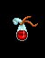 |
wine skin | the fluid will permanently increase your hits | Hits increase (max. 600) |
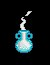 |
- | Quest item for tarak | - |
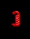 |
- | The fluid will permamently increase a random stat | increase random stat (must be maxed with normal pots first) |
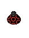 |
Black bottle with red circles | The fluid will permamently increase your strength | Strength increase (max. 18) |
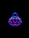 |
Blue bottle picturing | a red line | Willpower increase (max 19) |
| little red dots | Constitution increase (max 18) | ||
| a red line encircling 2 birds | Constitution increase (max. 10) | ||
| a red line encircling 3 birds | Constitution increase (max. 15) | ||
| a red line | Constitution increase (max. 18) | ||
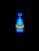 |
Bottle | - | Mend wounds (25 hits, varies) |
| This potion will permamently increase your willpower | Willpower increase (max. 19) | ||
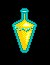 |
Bottle picturing | a bird over a diamond (1 bird) | Restore psi-points (max)??? |
| a bird over a diamond and a bird over a crescent moon (2 birds) | Restore psi-points (max)??? | ||
| four birds over a diamond (4 birds) | Restore lost hits due to death (+1 hp or more)??? | ||
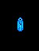 |
Blue vial with a silver fur | This potion will permanently increase your wisdom | Wisdom increase (max. 19) |
| This fluid is a potion of youth | Restore age to young | ||
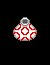 |
Bottle with tiny red circles | - | Agility increase (max. 18)??? |
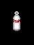 |
Clear glass bottle labelled 'Stan's Pure Grain' | - | +80 experience points, stunned for 2 rounds |
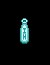 |
Clear vial labelled 'Instant Health' | - | Mend wounds (near max hits) |
| Completely reflectionless vial with no visible markings | The fluid will permamently increas your energy points | eps increase (1-6 points) | |
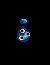 |
Dark bottle | covered with small eyeshaped symbols | Cure blindness |
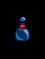 |
with a red cross on the neck | Mend wounds (10 hits, varies) | |
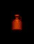 |
Large clay jug with a circular ring near the opening | - | Potent Potable (+1 - 300 exp and stun for few rounds) |
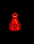 |
Red bottle with various fire dwelling creatures | - | Prot. from fire |
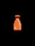 |
Sand colored bottle with a flat bottom | The fluid will permanently increase your intelligence | Intelligence increase (max. 19) |
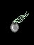 |
Silver bottle with | a strange smell | Cure poison |
| a strong smell | Cure blindness | ||
| red circles | Agility increase (max. 18) | ||
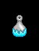 |
Silver-white bottle with a frosty base | - | Prot. from ice |
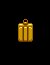 |
Slender bronze flask | - | Gas, -1 hit temporarily, +1 experience point |
 |
Small vial with lightning bolts along the side | - | Restore psi-points (max) |
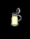 |
Tankard of ale | - | +1 hit, +10 experience points |
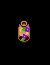 |
Tan vial with a painting of spring flowers | - | Nitro |
| - | Poison | ||
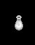 |
White vial | - | Cure poison |